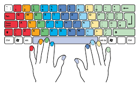

En el mundo de la informática, comprender la relación entre hardware y software es fundamental para aprovechar al máximo nuestras computadoras. Mientras que el hardware representa los componentes físicos, el software actúa como el conjunto de instrucciones que guía a esos componentes. Juntos, crean un sistema eficiente y funcional que permite realizar una amplia gama de tareas.
Este artículo explorará en detalle cómo interactúan el hardware y el software, utilizando la analogía del cuerpo y la mente humana. Al entender esta relación, podremos apreciar mejor la complejidad y la maravilla de la tecnología que utilizamos a diario.
Contenido
Hardware: El Cuerpo de la Computadora
Imagina que tu computadora es como un ser humano. En este sentido, el hardware sería el "cuerpo" de la computadora, mientras que el software representaría la "mente". De la misma forma que el cuerpo humano necesita de una mente para funcionar y tomar decisiones, el hardware necesita del software para que pueda ejecutar tareas, realizar cálculos y resolver problemas. Sin uno, el otro estaría incompleto, y juntos forman una poderosa unidad capaz de realizar diversas funciones.
Partes del Hardware
El hardware de una computadora está compuesto por todas las partes físicas y tangibles que la forman. Esas piezas son, en esencia, los órganos, los músculos y los huesos de la máquina. Desde el procesador, que sería como el "cerebro" de la computadora, hasta el disco duro que actúa como una "memoria", cada componente tiene un rol fundamental para que el sistema funcione adecuadamente. Los cables, la pantalla, el teclado y hasta los circuitos internos son partes del cuerpo físico de la computadora.
Software: La Mente de la Computadora
Por otro lado, el software es el "pensamiento", la "inteligencia" o los "procesos mentales" de la computadora. El software son los programas y sistemas operativos que permiten que el hardware ejecute acciones específicas, como abrir un archivo, ejecutar un juego o navegar por Internet. Sin el software, la computadora no sabría qué hacer. Es como un cuerpo sin pensamientos, que aunque tiene el potencial para moverse y actuar, no cuenta con la guía necesaria para realizar tareas.

Interacción entre Hardware y Software
Para que este sistema funcione correctamente, el hardware y el software deben trabajar juntos de manera coordinada. Al igual que un cuerpo y una mente sanos funcionan en sincronía para ejecutar movimientos o tomar decisiones, el hardware y el software también deben estar en armonía para ofrecer un rendimiento óptimo. Por ejemplo, cuando haces clic en un programa, el software (tu mente) da una orden, y el hardware (tu cuerpo) la ejecuta. Este proceso es tan rápido que pasa desapercibido para los usuarios, pero involucra miles de microprocesos.
El Sistema Operativo como Conciencia
El sistema operativo, un tipo de software esencial, actúa como la "conciencia" de la computadora. Se encarga de coordinar todas las interacciones entre el hardware y el resto del software. Si el hardware es el cuerpo y el software la mente, el sistema operativo es el "yo" consciente que mantiene el control sobre las funciones más importantes, permitiendo que la computadora gestione recursos, acceda a la memoria y mantenga la seguridad. Sin un sistema operativo, la computadora no podría funcionar de manera coherente.
Ejemplo Práctico: Escribir en un Teclado
Un ejemplo común para entender esta interacción es el acto de escribir en un teclado. Cuando presionas una tecla, tu computadora detecta esa acción a través del hardware del teclado. El software recibe esta información y la convierte en un carácter visible en la pantalla. Cada tecla que presionas activa una serie de procesos coordinados entre el hardware y el software. Esta colaboración permite que veas instantáneamente las letras que estás escribiendo.
Mejoras y Actualizaciones
La importancia de ambos, hardware y software, se nota en que pueden mejorarse o actualizarse para trabajar con mayor eficiencia. Puedes actualizar tu hardware, como comprar una memoria RAM más grande o una tarjeta gráfica más potente, y esto sería como fortalecer los "músculos" del cuerpo de tu computadora. Al mismo tiempo, puedes instalar software nuevo o actualizar el sistema operativo, que sería como expandir los "conocimientos" o habilidades de tu computadora, permitiéndole hacer cosas que antes no podía.
La Sinergia de Hardware y Software
Así, el hardware y el software son como dos partes de un todo: el cuerpo y la mente que, al estar en armonía, dan vida a la computadora. Esta sinergia permite que cada día usemos estos dispositivos para tareas cada vez más complejas, desde enviar mensajes hasta realizar análisis científicos. Es la relación entre estas dos facetas, el hardware y el software, lo que convierte a una computadora en una herramienta poderosa y esencial en la vida moderna.
¿Alguna vez te has preguntado cómo sería el mundo sin la combinación de hardware y software?